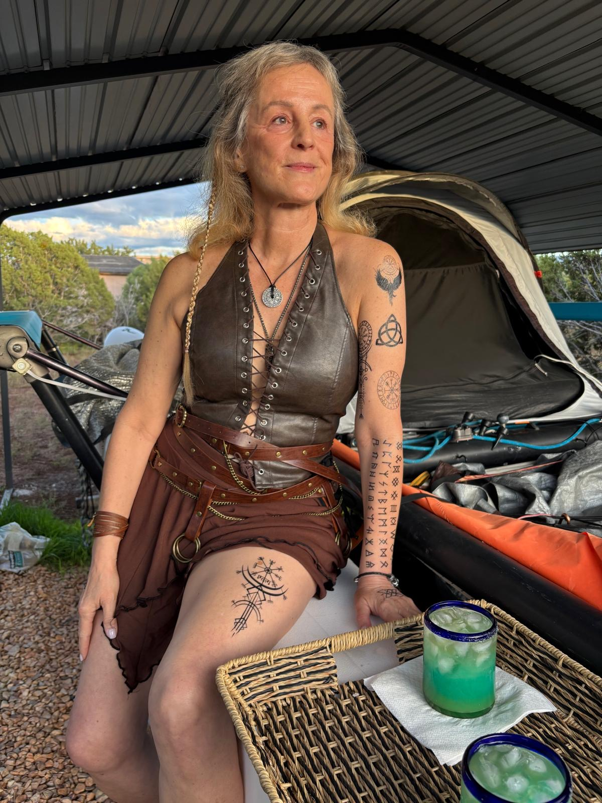
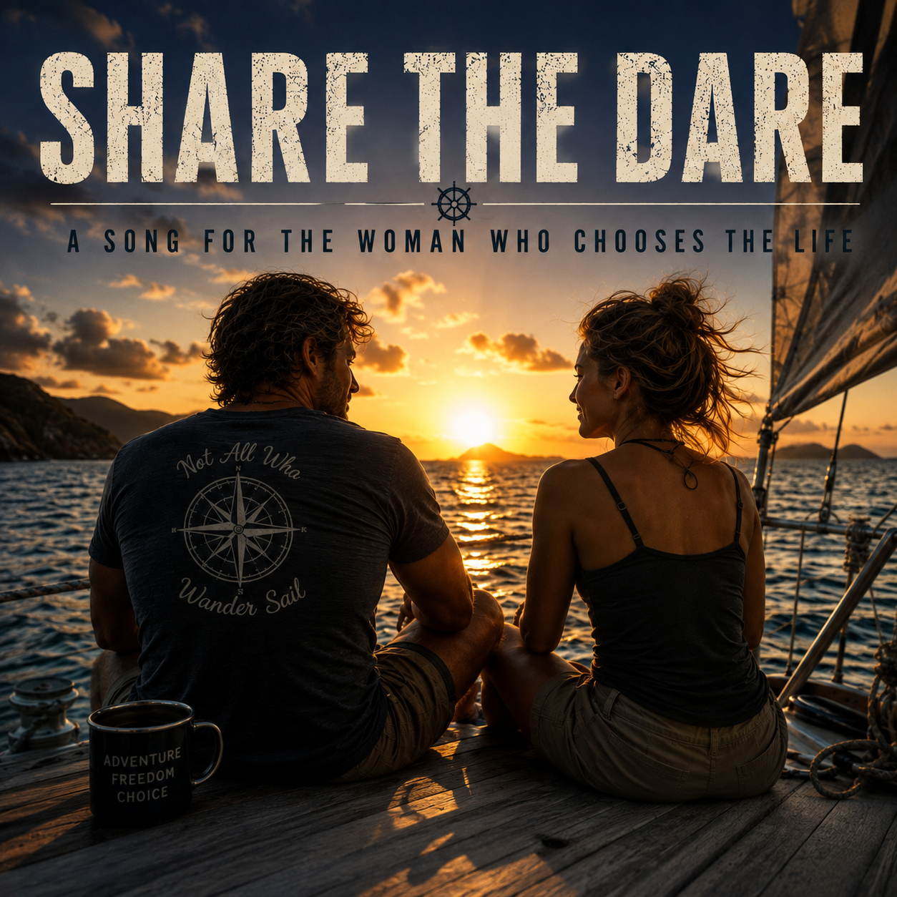

This page once asked a question: are you the Shield Maiden? It has been answered. Cintia has officially joined Blue Rim 5™ as the expedition's Shield Maiden — a partner, not a passenger. Two people, one 17-foot catamaran, Bahamas winters and Florida and Atlantic summers, reef to reef.
Written for the woman who would choose this life. Now she has.

The Shield Maiden began as an image. She wasn't imagined simply as a beautiful woman. She was imagined from the life of Catamaran Dan himself — his history, personality, adventures, contradictions, ambitions, and the life he is still determined to live.
Dan served in the U.S. Navy aboard submarines. He spent decades in technology and project management, earned graduate degrees, taught sailing, held a Coast Guard captain's license, became an advanced diver, traveled, explored, and somehow never lost his fascination with what might exist beyond the next horizon.
And now there is Blue Rim 5™. Rather than settling quietly into a conventional retirement, Dan is taking a 17-foot Hobie Getaway beach catamaran on a multiyear expedition through the Bahamas and along the Florida and Atlantic coast — living close to the water, snorkeling and diving the reefs, meeting people, making music, and discovering whatever waits around the next point of land.
There is also a touch of Viking mythology running through his world. The Nevado Raiders. Huginn and Muninn, the legendary ravens. Shield Maidens. Explorers. Sailors. Warriors. People willing to leave familiar shores without knowing exactly what they will find.
So the woman on the other hull couldn't simply be beautiful. She had to look as though she belonged there. She needed strength without sacrificing femininity. She needed the face of someone who had actually lived — someone comfortable with sun on her face, wind in her hair, and saltwater on her skin.
Then the image stopped being an image. Cintia stepped into it — the long silver-blonde hair, partly braided and partly free; the Nordic tattoos and runes; the pendant at her throat; the look of a woman who has accumulated stories rather than spent her life erasing the evidence that she has lived one.
She isn't covered in fantasy armor. Heavy armor has no place aboard a Hobie Getaway in tropical water. She is something between Shield Maiden, sailor, adventurer and free spirit — and she is real.
The shield was always the important part. It represents strength, but she doesn't hide behind it. She doesn't need rescuing. And she isn't waiting for somebody else to decide where her life is going.
That is Catamaran Dan's Shield Maiden. She was never a description of a perfect woman. She was a description of the life he has chosen to keep living — and now there are two people living it.
People ask who this expedition is meant to impress. Not the sailing community. Not social media. Not institutions, sponsors, or strangers with opinions about what constitutes a worthy adventure. Three decades of work — on submarines, in boardrooms, on the water, and in the kind of places that reshape how a man sees the world — have produced a value set that doesn't need external validation. The standard is internal. Always has been.
What that means in practice: the planning is meticulous, the preparation is relentless, and the execution is measured against one question — did we do this right? Not fast. Not impressively. Right. The sea is an honest judge and a poor audience. It rewards preparation, punishes arrogance, and has no interest in anyone's personal brand.
The highest loyalty here is to humanity itself — not to a tribe, a nation, a religion, a politics, or an ideology. The mission underneath every mile is the advancement, protection, and survival of human civilization and the natural systems that sustain it. That is the standard the Shield Maiden signed on to.
This is not a sailing trip. This is not a sabbatical. This is Blue Rim 5™ — a continuing expedition aboard Shamrocket, a 17-foot Hobie Getaway catamaran with a 24-inch draft, built to go places no keelboat ever will. Here is what the Shield Maiden is sailing into.
Departs Mobile, Alabama in October–November 2027. East along the Gulf coast and south to the Florida Keys for the first winter. Summer 2028 runs up the Atlantic coast to North Carolina. In late October 2028, Shamrocket crosses from Fort Lauderdale to the Bahamas.
Winters based around Great Exuma, working the islands: reefs, seagrass beds, mangrove creeks, blue holes, and the uninhabited cays bigger boats can't reach. Pure snorkeling and diving, with field research alongside marine research teams through the GROAN platform.
The Dry Tortugas, Key West and the Keys, up the Florida Atlantic coast, past Georgia and the Carolinas, to Cape Lookout and the wrecks of the Graveyard of the Atlantic. Dive spots, anchorages, beach pull-ups, shipwreck history, and waterfront music along the way.
Blue Rim 5™ is not a vacation that never ends. It is a continuous, live-aboard expedition — structured, disciplined, and purpose-driven. We anchor in places most sailors never find. We dive. We explore. We move when the weather says move and stay when the place is worth staying.
Some days are luminous. Some are long and wet and physically demanding. Some anchorages are paradise. Some are sketchy. Weather windows are not suggestions — they are decisions that determine whether you sleep or sail through the night.
The boat is small. The ocean is not. There is no support crew. There is no shore team waiting. At the core, there are two people on a catamaran — a captain and his Shield Maiden — and both of them carry the mission.
This page used to list what the Shield Maiden would need to bring. The search is over, but the list still matters. It is the standard both of us sail by.
Shamrocket carries a Brazilian timbau and bongos. Every anchorage has its own sound. Every crossing has its own rhythm. Two people at anchor write the soundtrack as they go — and share it with the world.
There will be a stage at every sunset.
Bahamas winters, Florida and Atlantic summers. Every reef, anchorage, and uninhabited beach earned at sea level, on a 17-foot catamaran, two people.
Sea turtles over the reef. Rays in the shallows. Blue holes in the Bahamas and the wrecks of the Graveyard of the Atlantic. Not on a screen — in it, every day, for years.
The expedition is documented in real time — photos, writing, field notes, the whole arc of it. A story told to the world as it happens, with two voices in it.
Not a hierarchy. A two-person team where both people carry the mission and both people carry each other. That's rare. That's what this was designed to be — from Mobile to the Bahamas and beyond.
The expedition runs on good judgment, not a calendar. Weather windows decide when we move. If a place is worth an extra month, it gets an extra month.
Most people spend their lives talking about what they might do someday. Fall 2027 is the day. Twenty years from now, we will both know exactly who we were and what we did with the time we had.
Blue Rim 5™ is more than an expedition — it is a story being written in real time, one anchorage at a time. The Living Saga is the narrative record of everything that happens on the water: the places, the people, the encounters, and the two lives at the center of it — the captain and his Shield Maiden.
Read The Living Saga →The search is over. Follow the captain and his Shield Maiden from the Gulf to the Keys, up the Atlantic coast, and across to the Bahamas.
Departing Fall 2027 • Mobile, Alabama • Bahamas Winters • Florida & Atlantic Summers • (928) 250-9763